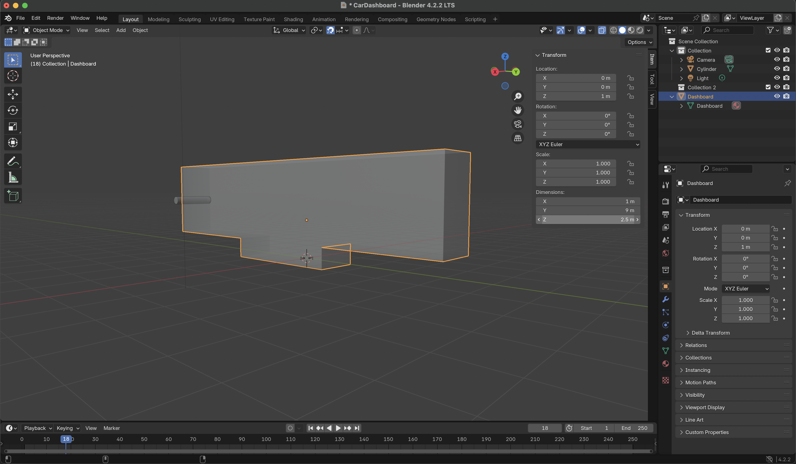
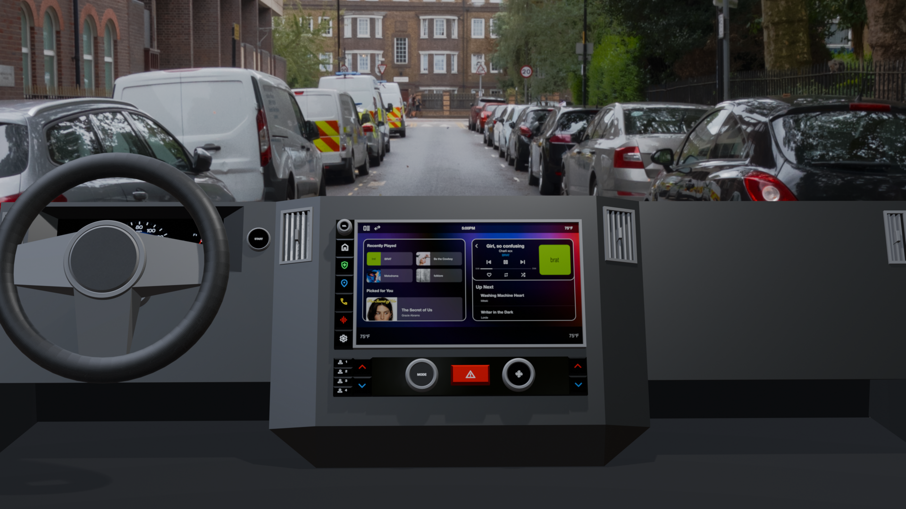

Product Interface in Blender
Concept & Sketches
My concept was to create a car dashboard for Subaru. Instead of replicating Subaru's current dashboard, I opted to combine this assignment with my Products, Services, & Systems (GIXD-501) assignment by creating a redesigned car dashboard. I researched the evolution of car dashboards for the Subaru Crosstrek and captured images from my own Subaru to serve as a reference point in my design process.
Evolution of Subaru Crosstrek dashboards from 2016 - 2024
Process
Modeling process was documented in 15 minute intervals
I began the process by making the foundation of my dashboard and creating the wheel. I spent some time trying to envision the ways in which my dashboard might extend downwards and the size at which I wanted my wheel to be. I referenced images of existing Subaru dashboards in order to get a better idea of its anatomy.
Renders
Takeaways
It helped to look at existing images and sketch things out before I started designing. I feel like I can get in my own head a bit when I jump straight into designing in software so it was helpful to do the research and envision what I wanted to accomplish on paper before I opened up Blender.
There were several tools that I learned how to use this time around such as the loop cut tool, working with materials, and adding image/HDRI backgrounds. I feel like these were not the most intuitive tools to use out of all that Blender had to offer so it took some time getting used to them.
The loop cut tool specifically was very challenging to use. I gained a lot of experience in placing/moving the loop cut, removing extra edges and faces that the loop cut might have created, and overall just figuring out the most effective way to split objects.
For future modeling in Blender, I would like to experiment more with shaders, bevels, and other features that will help my renders look more refined. I am definitely still relying a lot on low-poly modeling in order to accomplish what I want and would be interested in going more in-depth with rendering. I feel like I can also work on using the camera and lighting so that it serves my purposes a bit more effectively. I think it could also benefit for me to look at existing Blender models and play around in them to understand how the overall design and anatomy looks like in other cases.